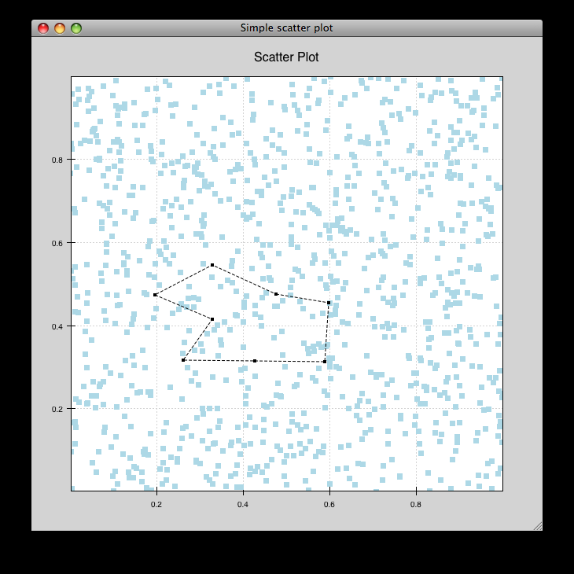

Annotated Examples¶
This section describes each of the examples provided with Chaco. Each example is designed to be a stand-alone demonstration of some of Chaco’s features. Though they are simple, many of the examples have capabilities that are difficult to find in other plotting packages.
Extensibility is a core design goal of Chaco, and many people have used the examples as starting points for their own applications.

bigdata.py¶
Demonstrates chaco performance with large datasets.
There are 10 plots with 100,000 points each. Right-click and drag to create a range selection region. The region can be moved around and resized (drag the edges). These interactions are very fast because of the backbuffering built into chaco.
Zooming with the mousewheel and the zoombox (as described in simple_line.py) is also available, but panning is not.
source: bigdata.py

cursor_tool_demo.py¶
A Demonstration of the CursorTool functionality
Left-button drag to move the cursors round. Right-drag to pan the plots. ‘z’-key to Zoom
source: cursor_tool_demo.py

data_labels.py¶
Draws a line plot with several points labelled. Demonstrates how to annotate plots.
source: data_labels.py

data_view.py¶
Example of how to use a DataView and bare renderers to create plots.
source: data_view.py


financial_plot.py¶
Implementation of a standard financial plot visualization using Chaco renderers and scales. Right-clicking and selecting an area in the top window zooms in the corresponding area in the lower window.
source: financial_plot.py

financial_plot_dates.py¶
Implementation of a standard financial plot visualization using Chaco renderers and scales. Right-clicking and selecting an area in the top window zooms in the corresopnding area in the lower window. This differs from the financial_plot.py example in that it uses a date-oriented axis.
source: financial_plot_dates.py

multiaxis.py¶
Draws several overlapping line plots like simple_line.py, but uses a separate Y range for each plot. Also has a second Y-axis on the right hand side. Demonstrates use of the BroadcasterTool.
source: multiaxis.py

multiaxis_using_Plot.py¶
- Draws some x-y line and scatter plots. On the left hand plot:
- Left-drag pans the plot.
- Mousewheel up and down zooms the plot in and out.
- Pressing “z” opens the Zoom Box, and you can click-drag a rectangular region to zoom. If you use a sequence of zoom boxes, pressing alt-left-arrow and alt-right-arrow moves you forwards and backwards through the “zoom history”.
source: multiaxis_using_Plot.py

noninteractive.py¶
This demonstrates how to create a plot offscreen and save it to an image file on disk. The image is what is saved.
source: noninteractive.py

range_selection_demo.py¶
Demo of the RangeSelection on a line plot. Left-click and drag creates a horizontal range selection; this selection can then be dragged around, or resized by dragging its edges.
source: range_selection_demo.py

scales_test.py¶
Draws several overlapping line plots.
Double-clicking on line or scatter plots opens a Traits editor for the plot.
source: scales_test.py

simple_line.py¶
Draws several overlapping line plots.
Double-clicking on line or scatter plots opens a Traits editor for the plot.
source: simple_line.py


vertical_plot.py¶
Draws a static plot of bessel functions, oriented vertically, side-by-side.
You can experiment with using different containers (uncomment lines 32-33) or different orientations on the plots (comment out line 43 and uncomment 44).
source: vertical_plot.py

data_cube.py¶
Allows isometric viewing of a 3-D data cube (downloads the necessary data, about 7.8 MB)
source: data_cube.py

data_stream.py¶
This demo shows how Chaco and Traits can be used to easily build a data acquisition and visualization system.
Two frames are opened: one has the plot and allows configuration of various plot properties, and one which simulates controls for the hardware device from which the data is being acquired; in this case, it is a mockup random number generator whose mean and standard deviation can be controlled by the user.
source: data_stream.py

scalar_image_function_inspector.py¶
Renders a colormapped image of a scalar value field, and a cross section chosen by a line interactor.
source: scalar_image_function_inspector.py


cmap_image_select.py¶
Draws a colormapped image plot. Selecting colors in the spectrum on the right highlights the corresponding colors in the color map.
source: cmap_image_select.py

cmap_scatter.py¶
Draws a colormapped scatterplot of some random data. Selection works the same as in cmap_image_select.py.
source: cmap_scatter.py

contour_cmap_plot.py¶
Renders some contoured and colormapped images of a scalar value field.
source: countour_cmap_plot.py

contour_plot.py¶
Draws an contour polygon plot with a contour line plot on top.
source: countour_plot.py


grid_container_aspect_ratio¶
Similar to grid_container.py, but demonstrates Chaco’s capability to used a fixed screen space aspect ratio for plot components.
source: grid_container_aspect_ratio.py


image_inspector.py¶
Demonstrates the ImageInspectorTool and overlay on a colormapped image plot. The underlying plot is similar to the one in cmap_image_plot.py.
source: image_inspector.py


inset_plot.py¶
A modification of line_plot1.py that shows the second plot as a subwindow of the first. You can pan and zoom the second plot just like the first, and you can move it around my right-click and dragging in the smaller plot.
source: inset_plot.py

line_drawing.py¶
Demonstrates using a line segment drawing tool on top of the scatter plot from simple_scatter.py.
source: line_drawing.py



nans_plot.py¶
This plot displays chaco’s ability to handle data interlaced with NaNs.
source: nans_plot.py


polygon_move.py¶
Shares same basic interactions as polygon_plot.py, but adds a new one: right-click and drag to move a polygon around.
source: polygon_move.py

regression.py¶
Demonstrates the Regression Selection tool.
Hold down the left mouse button to use the mouse to draw a selection region around some points, and a line fit is drawn through the center of the points. The parameters of the line are displayed at the bottom of the plot region. You can do this repeatedly to draw different regions.
source: regression.py


scatter_select.py¶
Draws a simple scatterplot of random data. The only interaction available is the lasso selector, which allows you to circle a set of points. Upon completion of the lasso operation, the indices of the selected points are printed to the console.
source: scatter_select.py

console output:
New selection:
[789 799 819 830 835 836 851 867 892 901 902 909 913 924 929
931 933 938 956 971 972 975 976 996 999 1011 1014 1016 1021 1030
1045 1049 1058 1061 1073 1086 1087 1088]


traits_editor.py¶
This example creates a simple 1-D function examiner, illustrating the use of ChacoPlotEditors for displaying simple plot relations, as well as Traits UI integration. Any 1-D numpy/scipy.special function works in the function text box.
source: traits_editor.py

zoomable_colorbar.py¶
Draws a colormapped scatterplot of some random data.
Interactions on the plot are the same as for simple_line.py, and additionally, pan and zoom are available on the colorbar.
Left-click pans the colorbar’s data region. Right-click-drag selects a zoom range. Mousewheel up and down zoom in and out on the data bounds of the color bar.
source: zoomable_colorbar.py

zoomed_plot¶
The main executable file for the zoom_plot demo.
Right-click and drag on the upper plot to select a region to view in detail in the lower plot. The selected region can be moved around by dragging, or resized by clicking on one of its edges and dragging.
source: zoomed_plot